pc_nsf_hifigan_44.1k_hop512_128bin) in the copy-synthesis section (Part A), and the OpenVPI nsf_hifigan build (from OpenUtau's nsf_hifigan dependency) in the synthesis section (Part B). In mel reproduction the two look comparable, but numerically NSF-HiFiGAN is slightly ahead, and perceptually its reproduction fidelity is also a little higher. Also, by design NHV emits a single periodic waveform per analysis frame, so it cannot reproduce acoustic features shorter than one frame; consequently lip noise and other sub-frame transients are rendered somewhat indistinctly. NHVSing V3's appeal is efficiency — comparable quality at a fraction of the model size and compute (~2 MB ONNX, no quantization).Efficiency — RTF and model size
RTF (real-time factor) = seconds of CPU compute per second of 44.1 kHz audio; lower is faster, and <1 means faster than real time. Both vocoders run as single-batch CPU inference (ONNX Runtime). Model size: NHVSing V3 = 2.2 MB ONNX (no quantization) vs NSF-HiFiGAN = 56.7 MB — about 26× smaller. Measured on an Apple 10-core CPU, ~5 s clip, median of 9 runs.
| CPU threads | NHVSing V3 (ONNX) | NSF-HiFiGAN (ONNX) | NHVSing speed-up |
|---|---|---|---|
| 1 | 0.076 (13×) | 0.604 (2×) | 8.0× |
| 2 | 0.065 (15×) | 0.316 (3×) | 4.9× |
| 4 | 0.062 (16×) | 0.201 (5×) | 3.3× |
| 8 | 0.063 (16×) | 0.198 (5×) | 3.1× |
NHVSing’s per-frame impulse-response filtering is embarrassingly parallel, but ONNX Runtime barely exploits it, so NHVSing V3 is essentially single-core-bound there (13× → 16× real time), whereas NSF-HiFiGAN’s large convolutions parallelize well (2× → 5×). Hence NHVSing’s speed lead is largest on low-core devices (~8×) and narrows to ~3× on many cores, but it stays ahead throughout. Native PyTorch does parallelize NHVSing as the algorithm allows (12× → 32× real time), and on multiple cores it even beats its own ONNX export:
| CPU threads | NHVSing V3 — ONNX Runtime | NHVSing V3 — PyTorch |
|---|---|---|
| 1 | 0.076 (13×) | 0.082 (12×) |
| 2 | 0.065 (15×) | 0.050 (20×) |
| 4 | 0.062 (16×) | 0.043 (23×) |
| 8 | 0.063 (16×) | 0.031 (32×) |
Part A — Copy-synthesis (NHVSing V3 / V3X vs pc-nsf-hifigan, ep1250)
One validation clip that is not included in the training data, taken from each dataset, re-synthesized by GT / NHVSing V3 / NHVSing V3X / NSF-HiFiGAN. V3X receives the mel sub-sampled to the hop-512 grid (the grid OpenUtau / DiffSinger produce) and upsamples it back internally, so comparing V3 with V3X isolates the cost of that hop-512→256 interpolation. Each cell shows the audio, its mel-spectrogram, and mel-L1 (L1 against the original mel; lower = closer). mel-L1 does not match perception, so judge by listening.
| segment | Ground Truth | NHVSing V3 | NHVSing V3X | NSF-HiFiGAN |
|---|---|---|---|---|
| 1st_color_0000 | 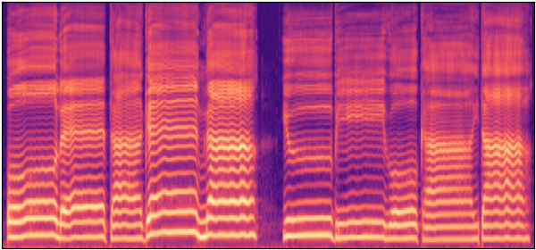 | 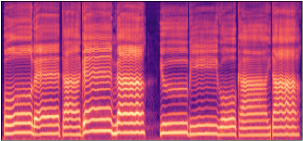 mel-L1 0.270 | 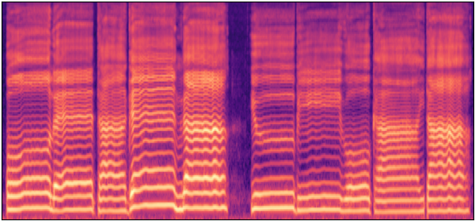 mel-L1 0.272 | 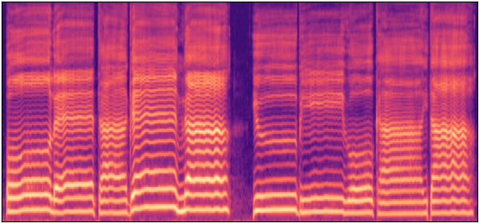 mel-L1 0.278 |
| 20186_0000 | 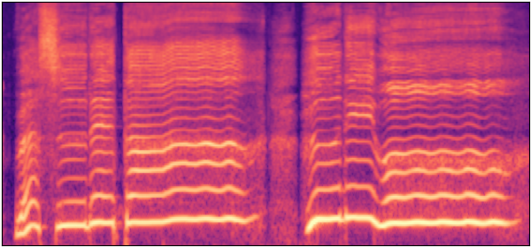 | 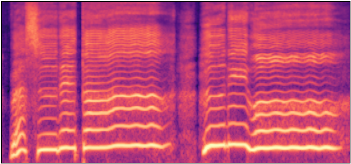 mel-L1 0.311 | 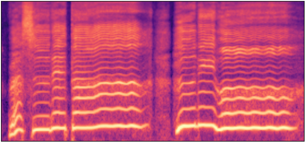 mel-L1 0.320 | 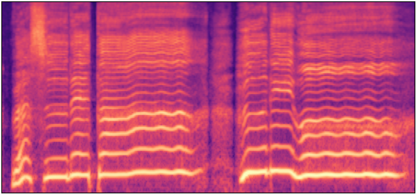 mel-L1 0.244 |
| CSD_en014b_0002 | mel-L1 0.297 | mel-L1 0.295 | 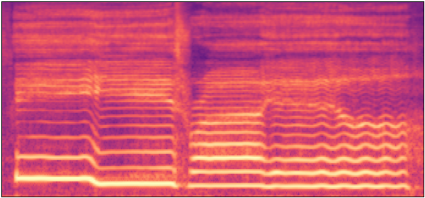 mel-L1 0.237 | |
| NUS48E_sing_JTAN_15_0005 | 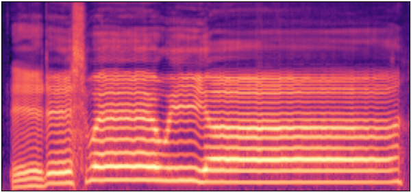 mel-L1 0.283 | mel-L1 0.281 | 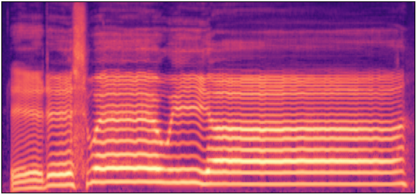 mel-L1 0.223 | |
| Natsume_Singing_DB_0713_12_0006 | 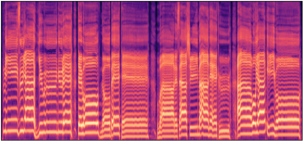 | mel-L1 0.328 | 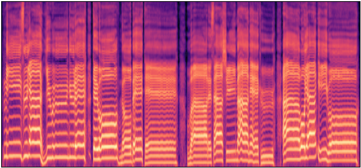 mel-L1 0.324 | 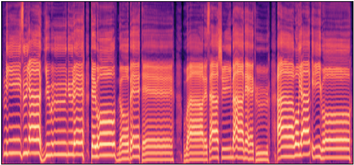 mel-L1 0.238 |
| ONIKU_KURUMI_UTAGOE_DB_hato_0000 | 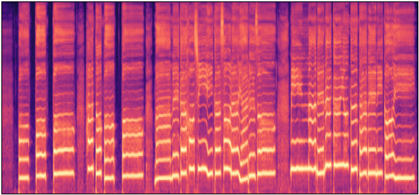 | mel-L1 0.372 | 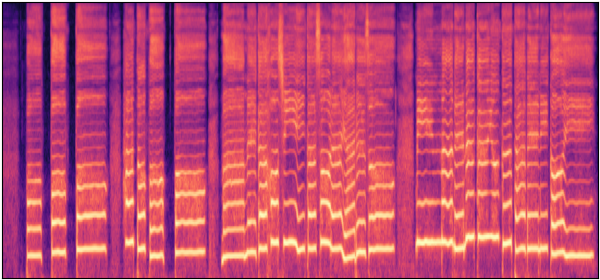 mel-L1 0.360 | mel-L1 0.267 |
| VocalSet_f8_long_trill_o_0000 | 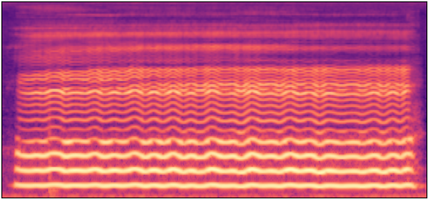 | 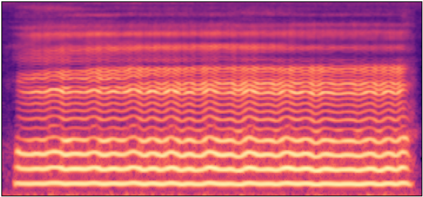 mel-L1 0.290 | 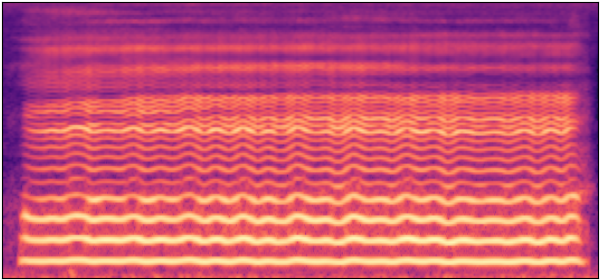 mel-L1 0.288 | 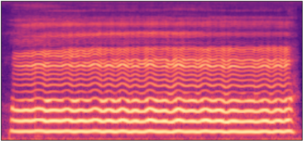 mel-L1 0.260 |
| acapella_song2_s02_0024_0000 | 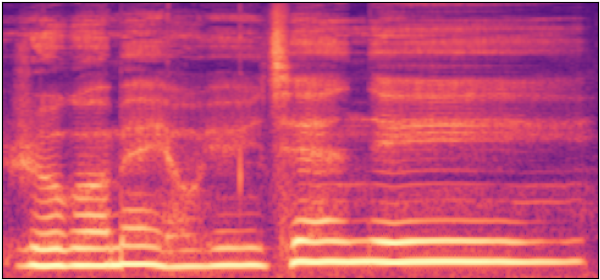 | 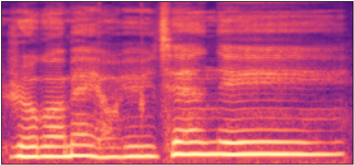 mel-L1 0.320 | mel-L1 0.323 | 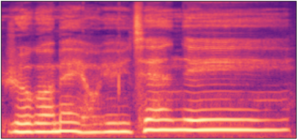 mel-L1 0.258 |
| kiritan_singing_09_0006 | 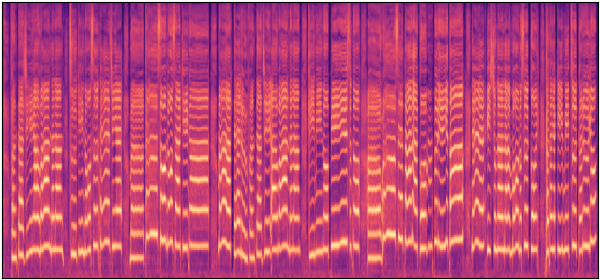 | mel-L1 0.340 | 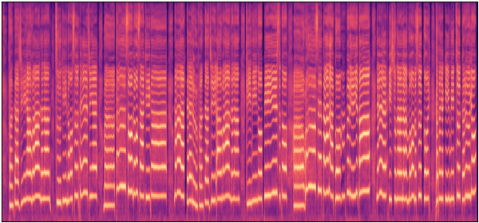 mel-L1 0.345 | 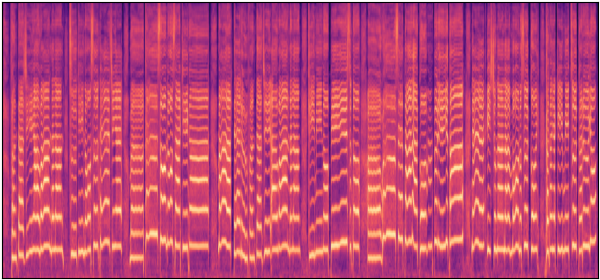 mel-L1 0.263 |
| segments_2009000333_0000 | 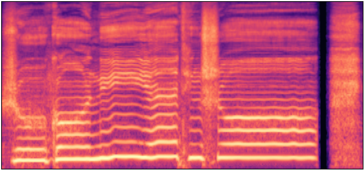 | 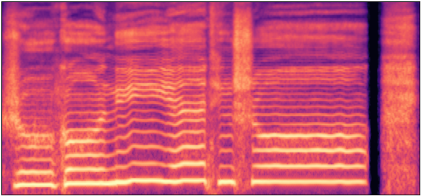 mel-L1 0.312 | mel-L1 0.311 | mel-L1 0.248 |
| wav_O_re_04_0003 | 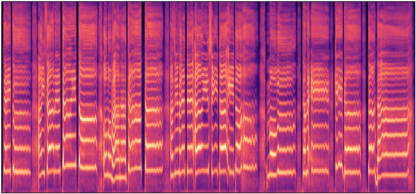 | 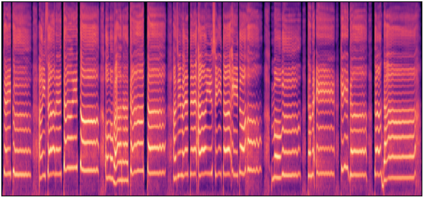 mel-L1 0.403 | 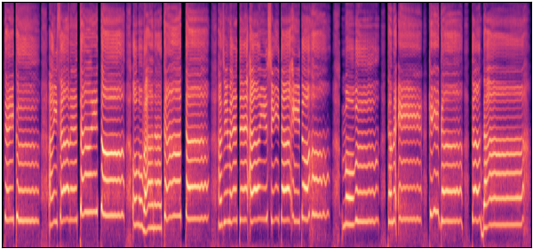 mel-L1 0.390 | 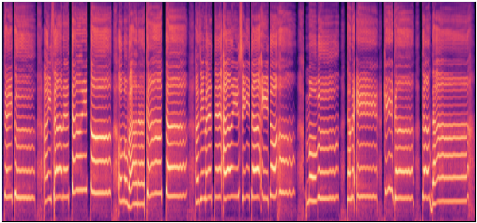 mel-L1 0.286 |
Part B — Singing synthesis (DiffSinger acoustic mel)
Using the DiffSinger acoustic voicebanks of Namine Ritsu and Natsume Yuri (transposed −3 semitones), we synthesized Aka-tombo (Red Dragonfly) and Twinkle Twinkle Little Star (each split into two halves). This demonstrates swapping OpenUtau's default DiffSinger vocoder (nsf_hifigan) out for NHVSing: the same predicted (generated) acoustic mel is re-synthesized by NSF-HiFiGAN and NHVSing V3X@1250. Each spectrogram has three panes — predicted mel / NSF-HiFiGAN output mel / NHVSing output mel. Pure synthesis has no ground truth, so mel-L1 is the fidelity of reconstructing the input mel (reference only).
| Singer / Song | NSF-HiFiGAN | NHVSing V3X@1250 | mel-L1 (NSF / V3X) |
|---|---|---|---|
| Namine Ritsu Aka-tombo — part 1 T=731 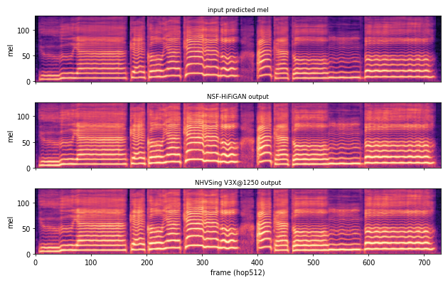 | 0.449 / 0.440 | ||
| Namine Ritsu Aka-tombo — part 2 T=727 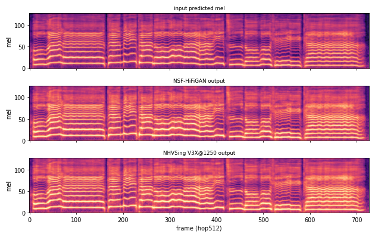 | 0.440 / 0.466 | ||
| Namine Ritsu Twinkle Twinkle — part 1 T=710 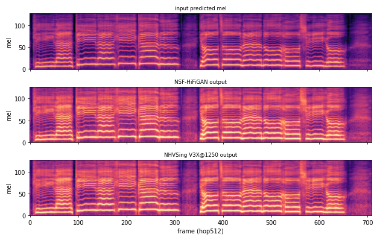 | 0.743 / 0.715 | ||
| Namine Ritsu Twinkle Twinkle — part 2 T=709 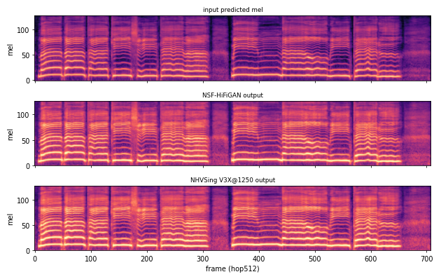 | 0.648 / 0.759 | ||
| Natsume Yuri Aka-tombo — part 1 T=735 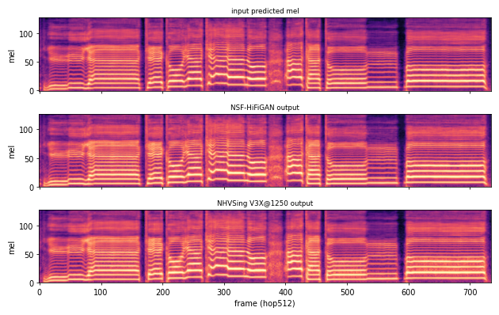 | 0.227 / 0.243 | ||
| Natsume Yuri Aka-tombo — part 2 T=727 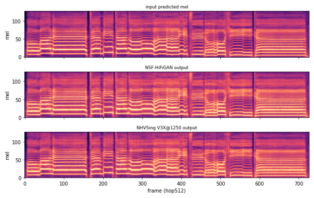 | 0.275 / 0.190 | ||
| Natsume Yuri Twinkle Twinkle — part 1 T=718 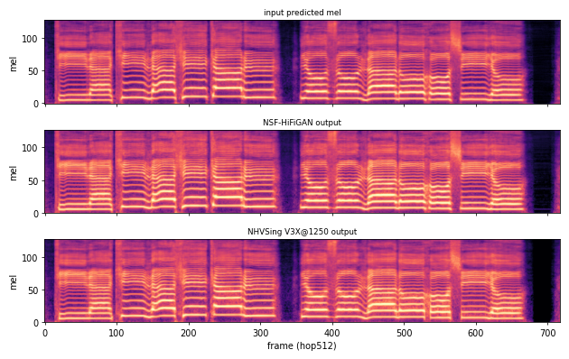 | 0.277 / 0.240 | ||
| Natsume Yuri Twinkle Twinkle — part 2 T=713 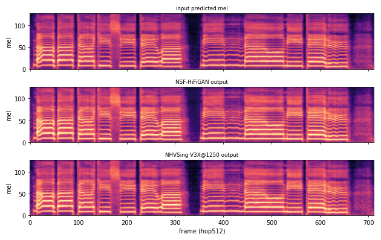 | 0.312 / 0.223 |